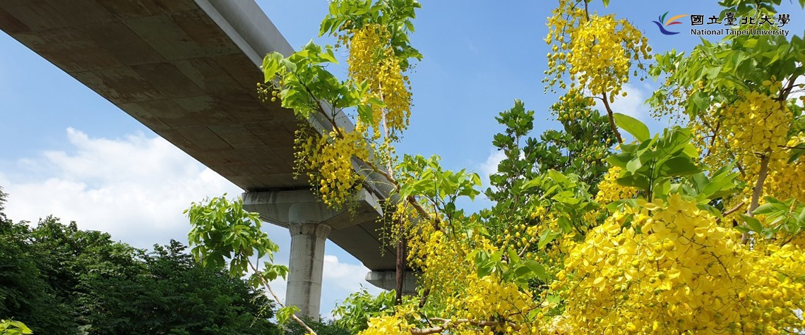
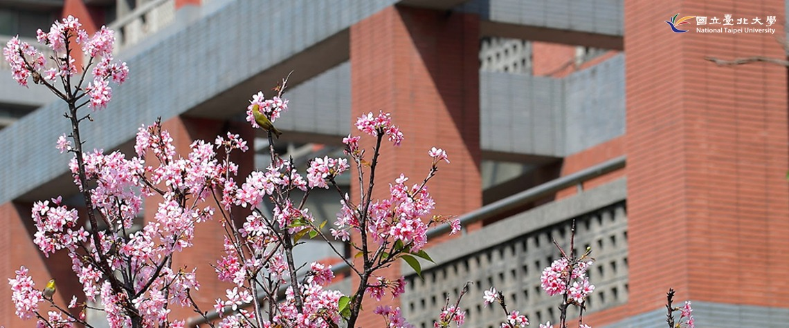

緊急電話：02-2671-1234
校園聯絡簿
行事曆
校長遴選
回舊首頁
新鮮人
在校學生
國際|僑陸生
校友
教職員
訪客
無障礙
關於臺北大學
校史
認識臺北大學
臺北大學校訊
臺北大學人物
臺北聯合大學系統
校務公開資訊
交通與地圖
學術單位
學院
法律學院
商學院
公共事務學院
社會科學學院
人文學院
電機資訊學院
永續創新國際學院
校級研究中心
全球變遷與永續科學研究中心
亞洲暨泛太平洋地區研究中心
財政暨金融研究中心
海山學研究中心
大數據與智慧城市研究中心
其他教學單位
進修暨推廣部
通識教育中心
師資培育中心
語言中心
行政單位
校長室
副校長室
教務處
學生事務處
總務處
研究發展處
國際事務處
圖書館
體育室
秘書室
人事室
主計室
資訊中心
進修暨推廣部
校友中心
招生資訊
永續報告
搜尋
ENG
嚴重特殊傳染性肺炎防疫專區 (http://lms.ntpu.edu.tw/site/wpep)
三峽校區9/12實施戶外水溝噴藥消毒作業
鳶園運動休憩平台8/14-9/22實施改善工程
行政大樓入口雨遮工程8/13-9/12施工
崇越館太陽光電發電設備租賃工程施工
臺北校區建築物公共安全改善工程施工作業公告
嚴重特殊傳染性肺炎防疫專區 (http://lms.ntpu.edu.tw/site/wpep)
三峽校區9/12實施戶外水溝噴藥消毒作業
閱讀全文


閱讀全文
校園焦點
2021世界大學排名 臺北大學列全臺公校16名
September 5, 2020
英國泰晤士報高等教育特刊(Times Higher Education; THE)9月2日發布2021全球大學排名(2021 World University Rankings)，臺灣共有38所大學入榜，臺北...
閱讀全文
養成未來人才 教務處《跨域學習手冊》出版
September 5, 2020
在人工智慧(AI)、大數據等最新科技興起下，產業結構快速改變，單一專長領域已無法滿足產業人才需求。多元跨域能力的「非」型特質，才是未來社會所渴求的...
閱讀全文
接任校友總會理事長 林錫埼擦亮母校招牌
September 4, 2020
文/校友中心 8月20日上午，校友中心團隊造訪位於五股「新北工業園區」的圜達實業股份有限公司，專訪甫就任校友總會理事長的林錫埼學長。林理事長上任以...
閱讀全文
照顧師生並連結社區 幼兒園活力開學
September 2, 2020
「大野狼把母雞媽媽的蛋都偷走了，小朋友，你們可以幫忙把蛋找回來嗎？」在老師的帶領下，小朋友們加緊速度往前爬、用力跳，希望趕快把彩色球蛋通通帶回...
閱讀全文
全部
活動
招生
課務
徵才
校友中心專訪校友總會蔡江城秘書長
2020 / 09 / 04
109-1北聯大通識/全英語/遠距課程更新
2020 / 09 / 04
臺北校區財務副校長室 徵求行政專員
2020 / 09 / 03
109-1 Study Group 學習小組報名簡章
2020 / 09 / 03
公告110學年度碩士班甄試入學招生簡章
2020 / 09 / 02
臺北大學校友總會 徵工讀生
2020 / 09 / 01
北聯大系統專題研究計畫10月起受理申請
2020 / 09 / 01
109-1通識教育中心臺北校區駐點時間
2020 / 09 / 01
「英語聽講練習」課程重補修注意事項
2020 / 08 / 31
校友中心109高教深耕計畫助理徵聘結果
2020 / 08 / 31
日本住友財團研究獎助計畫10/31前申請
2020 / 08 / 28
調查：臺北大學生跨域學習外在動機影響大
2020 / 06 / 15
科技服務 社科院UFO邀長者挑戰肌力平衡力
2020 / 05 / 14
教部第二屆全國大專校院教師ODF競賽報名
2020 / 05 / 07
結合網路直播 晨星鋼琴大賽12日晚間登場
2020 / 05 / 06
揭開神秘面紗 看見緬甸特展即起登場
2020 / 04 / 17
109-2赴外交換簡章暨申請公告
2020 / 03 / 27
財政部臺北國稅局實習報名至3/2
2020 / 02 / 06
即日起提升武漢旅遊疫情至第三級警告(Warning)
2020 / 01 / 22
笑淚交織 青銀共學發表長者真人圖書成果
2020 / 01 / 14
108-2學期赴外交換生行前說明會落幕
2020 / 01 / 03
108-2學期國際學伴說明會落幕
2020 / 01 / 03
公告110學年度碩士班甄試入學招生簡章
2020 / 09 / 02
109-1日間部隨班附讀開課
2020 / 08 / 17
師培中心109學年度第2次教育學程新生甄選
2020 / 08 / 17
109學年日間學士班轉學生招生考試錄取名單
2020 / 08 / 03
109單獨招收身心障礙學生招生錄取名單
2020 / 06 / 22
師培中心109學年度第2次教育學程新生甄選
2020 / 06 / 19
109境外臺生因應疫情返臺就學銜接專案招生
2020 / 06 / 12
公告109學年博士班一般入學考試錄取名單
2020 / 05 / 29
109大學個人申請分發與相關注意事項
2020 / 05 / 20
109日間暨進修學士班轉學考5/8起報名
2020 / 05 / 07
109大學「個人申請」入學招生錄取名單
2020 / 04 / 30
109-1北聯大通識/全英語/遠距課程更新
2020 / 09 / 04
109-1通識教育中心臺北校區駐點時間
2020 / 09 / 01
「英語聽講練習」課程重補修注意事項
2020 / 08 / 31
109-1第2次選課至8/31下午5時止
2020 / 08 / 25
109學士班新生期初校內英文能力測驗公告
2020 / 08 / 14
109-1語言中心民生校區駐點公告
2020 / 07 / 13
109-1大學英文、英語聽講練習重補修登記
2020 / 06 / 17
108暑修課程6/17開放報名
2020 / 06 / 09
遠距課程即日起得轉回實體授課
2020 / 06 / 08
QR Code線上點名系統 5/1啟用
2020 / 05 / 01
臺北大學協助陸港澳臺生防疫期間返臺學習銜接
2020 / 03 / 04
臺北校區財務副校長室 徵求行政專員
2020 / 09 / 03
臺北大學校友總會 徵工讀生
2020 / 09 / 01
校友中心109高教深耕計畫助理徵聘結果
2020 / 08 / 31
公共事務學院109高教深耕計畫助理徵聘結果
2020 / 08 / 26
進修暨推廣部推廣教育組誠徵行政專員
2020 / 08 / 19
教務處教學發展中心徵求工讀生10名
2020 / 08 / 12
進修暨推廣部徵聘聘僱人員(工程助理)1名
2020 / 08 / 03
校友中心徵求高教深耕計畫專任助理一名
2020 / 07 / 29
電機資訊學院徵求高教深耕計畫專任助理一名
2020 / 07 / 28
進修暨推廣部行政管理組臺北校區宿舍徵才
2020 / 07 / 27
亞洲暨泛太平洋地區研究中心誠徵專任助理
2020 / 07 / 23
公告列表
重要時程
07
JUL
暑假開始
05
SEP
新生家長座談會
07
SEP
新生報到
14
SEP
開始上課
近期活動
109-1職場增能工作坊-微電影、短片工作坊
2020 / 09 / 12
查看
資108
「水上自救暨基礎游泳技術」研習活動
2020 / 09 / 25
查看
三峽校區綜合體育館地下一樓游泳池。
第一屆跨領域視野下的學與用學術研討會
2020 / 09 / 26
查看
國立臺北大學三峽校區人文學院
更多活動
進入防疫專區
推廣教育
三峽校區
32.0°C
雨量：0 mm
紫外線：過量
空氣品質：良好
公車(正門)
916
：
0
min
922
：
0
min
932
： 目前未發車
921
：
0
min
939
： 即將進站
981
：
鶯歌火車站
北上：
18
min,
39
min
南下：
5
min,
22
min
YouBike
正門： n/a
資訊中心： n/a
恩主公醫院： n/a
數位學苑2.0
校園雲平台
台北聯合大學系統
性別平等專區
校務建言
贊助北大
重大建設
租屋資訊系統
線上報名服務
臺北大學社團
高教深耕專區
課程查詢系統
Please enable JavaScript to continue using this application.